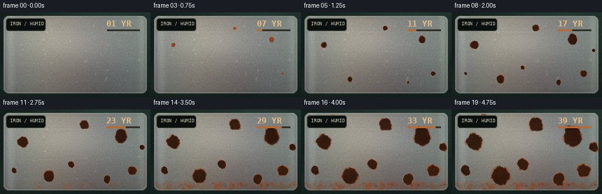
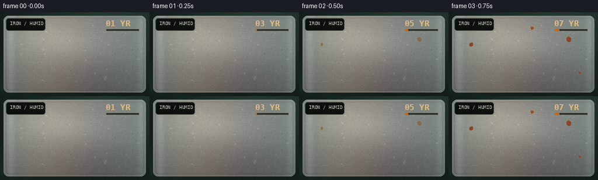

CODING AGENTS AS PIXEL WORLD MODELS
traex/DeepSeek-V4.1-Flash · phygen_156
点击播放 · 原生 RGB 像素
逐轮保存的候选
回放视频、检查图与代码变化。
每份候选均可单独播放。实际图片检查记录在下方工具轨迹中。
候选 01播放与检查图
点击播放 · 原生 RGB 像素


展开代码变化
--- 上一保存版本
+++ 本次保存版本
@@ -0,0 +1,247 @@
+"""Procedural macro timelapse: polished iron weathering over several decades."""
+
+from pathlib import Path
+
+import cv2
+import numpy as np
+from PIL import Image, ImageDraw, ImageFilter, ImageFont
+
+import artifact_io
+
+
+W, H, N, FPS = 256, 144, 20, 4.0
+HERE = Path(__file__).resolve().parent
+RNG = np.random.default_rng(156)
+
+
+def noise_field(h, w, scale, seed):
+ """Smooth, tile-free value noise built from successively finer octaves."""
+ rng = np.random.default_rng(seed)
+ total = np.zeros((h, w), np.float32)
+ weight = 0.0
+ for octave, amp in enumerate((1.0, 0.50, 0.25, 0.12, 0.06)):
+ sh = max(2, int(h / scale * 2**octave))
+ sw = max(2, int(w / scale * 2**octave))
+ coarse = rng.random((sh, sw)).astype(np.float32)
+ total += amp * cv2.resize(coarse, (w, h), interpolation=cv2.INTER_CUBIC)
+ weight += amp
+ total /= weight
+ return (total - total.min()) / (total.max() - total.min() + 1e-6)
+
+
+def smoothstep(edge0, edge1, x):
+ t = np.clip((x - edge0) / (edge1 - edge0), 0, 1)
+ return t * t * (3 - 2 * t)
+
+
+def make_background():
+ y, x = np.mgrid[:H, :W].astype(np.float32)
+ bg = np.zeros((H, W, 3), np.float32)
+ bg[:] = (14, 24, 23)
+ # Soft, green-grey studio falloff and a cool window reflection.
+ radial = np.exp(-((x - 188) / 145) ** 2 - ((y - 6) / 110) ** 2)
+ bg += radial[..., None] * np.array([20, 31, 28], np.float32)
+ bg += np.exp(-((x - 24) / 85) ** 2 - ((y - 118) / 35) ** 2)[..., None] * np.array([8, 12, 9], np.float32)
+ grain = noise_field(H, W, 2.5, 1)
+ bg += (grain[..., None] - 0.5) * 5.0
+ return bg
+
+
+def rounded_rect_mask(inset=6, radius=8):
+ mask = Image.new("L", (W, H), 0)
+ ImageDraw.Draw(mask).rounded_rectangle(
+ (inset, inset, W - 1 - inset, H - 1 - inset), radius=radius, fill=255
+ )
+ return np.asarray(mask, np.float32) / 255.0
+
+
+def make_plate_texture():
+ """A horizontal brushed-steel plate with bevels, reflections, and fine grain."""
+ y, x = np.mgrid[:H, :W].astype(np.float32)
+ mask = rounded_rect_mask()
+ inner = rounded_rect_mask(9, 7)
+
+ vertical = np.clip((y - 6) / (H - 12), 0, 1)
+ base = np.empty((H, W, 3), np.float32)
+ base[..., 0] = 138 - 38 * vertical + 11 * np.sin(x / 41)
+ base[..., 1] = 145 - 42 * vertical + 10 * np.sin(x / 39 + 0.4)
+ base[..., 2] = 143 - 39 * vertical + 8 * np.sin(x / 44 + 1.2)
+
+ # Long horizontal brush marks and small-scale cast-metal grain.
+ brush = noise_field(H, W, 0.55, 10)
+ brush = np.asarray(
+ Image.fromarray((brush * 255).astype(np.uint8)).filter(ImageFilter.GaussianBlur((7.0, 0.55))),
+ np.float32,
+ ) / 255.0
+ brush = (brush - brush.mean()) * 24
+ speckle = RNG.normal(0, 3.8, (H, W)).astype(np.float32)
+ base += brush[..., None] + speckle[..., None]
+
+ # Broad reflected light band, strongest across the upper-middle.
+ sheen = np.exp(-((x - 128) / 105) ** 2) * np.exp(-((y - 55) / 39) ** 2)
+ base += sheen[..., None] * np.array([20, 22, 21], np.float32)
+ edge_light = np.exp(-((x - 18) / 7) ** 2) + 0.7 * np.exp(-((x - 241) / 6) ** 2)
+ base += edge_light[..., None] * np.array([15, 17, 16], np.float32)
+
+ # Dark bevel and crisp but soft edge highlight.
+ edge = cv2.GaussianBlur((1 - inner) * mask, (0, 0), 1.5)
+ base *= (1 - 0.36 * edge[..., None])
+ rim = cv2.GaussianBlur(mask - inner, (0, 0), 0.65)
+ base += rim[..., None] * np.array([36, 40, 38], np.float32)
+
+ # A few shallow longitudinal machining scratches.
+ scratches = Image.new("L", (W, H), 0)
+ sd = ImageDraw.Draw(scratches)
+ scratch_data = [(24, 31, 223, 35, 46), (33, 86, 206, 83, 34), (16, 118, 238, 116, 38)]
+ for x0, y0, x1, y1, alpha in scratch_data:
+ sd.line((x0, y0, x1, y1), fill=alpha, width=1)
+ scratch = np.asarray(scratches.filter(ImageFilter.GaussianBlur(0.45)), np.float32) / 255
+ base += scratch[..., None] * np.array([32, 34, 32], np.float32)
+
+ return base, mask, inner
+
+
+def draw_droplets(image, frame_index, inner):
+ """A thin, slowly drying film of condensation catches the studio light."""
+ t = frame_index / (N - 1)
+ layer = image.copy()
+ rng = np.random.default_rng(770)
+ y, x = np.mgrid[:H, :W].astype(np.float32)
+ for i in range(54):
+ cx = rng.uniform(14, W - 14)
+ cy = rng.uniform(15, H - 15)
+ radius = rng.uniform(0.65, 2.4)
+ # Condensation is gradually consumed by the corrosion.
+ life = rng.uniform(0.22, 0.90)
+ strength = np.clip((life - t) / 0.14, 0, 1)
+ if strength <= 0:
+ continue
+ yy0, yy1 = max(0, int(cy - 4)), min(H, int(cy + 5))
+ xx0, xx1 = max(0, int(cx - 4)), min(W, int(cx + 5))
+ yy, xx = np.mgrid[yy0:yy1, xx0:xx1].astype(np.float32)
+ d = np.sqrt((xx - cx) ** 2 + (yy - cy) ** 2)
+ drop = np.exp(-((d / radius) ** 4))
+ highlight = np.exp(-(((xx - cx + radius * 0.33) / (radius * 0.34)) ** 2 +
+ ((yy - cy + radius * 0.34) / (radius * 0.27)) ** 2))
+ region = layer[yy0:yy1, xx0:xx1]
+ region += (drop * strength * 7)[..., None] * np.array([0.9, 1.0, 1.0])
+ region += (highlight * strength * 36)[..., None]
+ layer[yy0:yy1, xx0:xx1] = np.clip(region, 0, 255)
+ # Keep droplets inside the steel silhouette.
+ return image * (1 - inner[..., None]) + layer * inner[..., None]
+
+
+def rust_blobs(t):
+ """Small seeds at early time, merged and spreading fields near the end."""
+ centers = [
+ (38, 55, 21, 0.04), (205, 46, 25, 0.02), (224, 103, 17, 0.10),
+ (83, 113, 24, 0.15), (143, 27, 18, 0.08), (182, 119, 15, 0.21),
+ (56, 18, 14, 0.18), (120, 94, 15, 0.28), (242, 65, 12, 0.25),
+ (24, 104, 12, 0.31),
+ ]
+ field = np.zeros((H, W), np.float32)
+ y, x = np.mgrid[:H, :W].astype(np.float32)
+ warp = noise_field(H, W, 16, 20) - 0.5
+ for cx, cy, size, onset in centers:
+ age = np.clip((t - onset) / (0.96 - onset), 0, 1)
+ radius = size * (0.16 + 0.92 * age)
+ dx = x - cx + 5.0 * warp * (0.4 + age)
+ dy = y - cy + 5.0 * (noise_field(H, W, 13, cx + cy) - 0.5) * (0.4 + age)
+ d = np.sqrt(dx * dx + dy * dy) / radius
+ halo = smoothstep(1.15, 0.22, d)
+ field = np.maximum(field, halo * smoothstep(0.0, 0.10, age))
+ # Rust also creeps along the lower lip and plate seams.
+ lower = smoothstep(109, 138, y) * smoothstep(0.10, 0.82, t)
+ lip = np.exp(-((y - 126) / 11) ** 2) * smoothstep(0.03, 0.70, t)
+ field = np.maximum(field, (0.32 * lower + 0.34 * lip) * smoothstep(0.0, 0.65, t))
+ return field
+
+
+def corrosion(image, frame_index, inner):
+ """Paint layered hydrated iron oxide and localized pitting onto the plate."""
+ t = frame_index / (N - 1)
+ y, x = np.mgrid[:H, :W].astype(np.float32)
+ broad = rust_blobs(t)
+
+ # Flaking edges and fine radial filaments sell the chemical growth.
+ fine = noise_field(H, W, 5.2, 301)
+ coarse = noise_field(H, W, 22, 302)
+ erosion = smoothstep(0.39, 0.76, broad + (fine - 0.50) * 0.32 + (coarse - 0.5) * 0.12)
+ erosion *= smoothstep(0.02, 0.17, t)
+ core = smoothstep(0.36, 0.84, broad + (noise_field(H, W, 3.0, 303) - 0.5) * 0.25)
+ core *= smoothstep(0.05, 0.30, t)
+
+ # Ochre, burnt orange, and dark chocolate oxidation; exposed pits are nearly black.
+ rust_light = np.array([181, 94, 42], np.float32)
+ rust_mid = np.array([133, 61, 27], np.float32)
+ rust_dark = np.array([64, 33, 21], np.float32)
+ tone = noise_field(H, W, 7.0, 311)[..., None]
+ rust_color = rust_mid * (1 - tone) + rust_light * tone
+ oxide = rust_color * (1 - 0.48 * core[..., None]) + rust_dark * (0.48 * core[..., None])
+ # Fine granular color variation, not a flat procedural blob.
+ grain = noise_field(H, W, 1.35, 318)[..., None] - 0.5
+ oxide += grain * np.array([24, 15, 8], np.float32)
+ image[:] = image * (1 - erosion[..., None] * 0.94) + oxide * erosion[..., None] * 0.94
+
+ # Pitting shadow and a pale corrosion rim catch the low light.
+ pits = smoothstep(0.54, 0.83, core + 0.12 * (noise_field(H, W, 2.0, 321) - 0.5))
+ image *= (1 - pits[..., None] * 0.55)
+ edge = np.clip(cv2.GaussianBlur(erosion, (0, 0), 1.15) - erosion, 0, 1)
+ image += edge[..., None] * np.array([34, 21, 10], np.float32)
+
+ # A thin patina-like cool shadow at the upper edge of the largest bloom.
+ bloom_shadow = np.exp(-((x - 201) / 43) ** 2 - ((y - 34) / 17) ** 2)
+ image -= bloom_shadow[..., None] * np.array([8, 7, 5], np.float32) * smoothstep(0.1, 0.8, t)
+ return np.clip(image, 0, 255)
+
+
+def studio_light(image, mask, t):
+ """Stable macro lighting with a soft moving sheen and vignette."""
+ y, x = np.mgrid[:H, :W].astype(np.float32)
+ # Glancing highlight across brushed metal.
+ sheen = np.exp(-((x - (95 + 42 * t)) / 62) ** 2) * np.exp(-((y - 45) / 25) ** 2)
+ image += sheen[..., None] * np.array([10, 10, 9], np.float32) * (1 - 0.4 * t)
+ # Cool ambient bounce from the background, warm bounce from the rust.
+ warm = np.exp(-((x - 210) / 80) ** 2 - ((y - 112) / 28) ** 2) * t
+ image += warm[..., None] * np.array([9, 4, 1], np.float32)
+ vignette = np.exp(-(((x - W / 2) / 185) ** 2 + ((y - H / 2) / 125) ** 2))
+ image *= (0.82 + 0.18 * vignette[..., None])
+ return np.clip(image, 0, 255) * mask[..., None] + make_background() * (1 - mask[..., None])
+
+
+def overlay_label(image, frame_index):
+ """Sparse editorial caption: decades of exposure, not a busy HUD."""
+ img = Image.fromarray(np.clip(image, 0, 255).astype(np.uint8))
+ draw = ImageDraw.Draw(img)
+ font_small = ImageFont.truetype("/usr/share/fonts/truetype/dejavu/DejaVuSansMono.ttf", 8)
+ font_year = ImageFont.truetype("/usr/share/fonts/truetype/dejavu/DejaVuSansMono-Bold.ttf", 14)
+ # Small corner marker and caption stay legible against the dark frame.
+ draw.rounded_rectangle((10, 10, 77, 31), radius=4, fill=(10, 15, 14, 210), outline=(72, 83, 72), width=1)
+ draw.text((17, 14), "IRON / HUMID", font=font_small, fill=(190, 196, 179))
+ year = 1 + frame_index * 2
+ draw.text((181, 11), f"{year:02d} YR", font=font_year, fill=(221, 189, 135))
+ # A small exposure bar communicates continuous elapsed time.
+ draw.rectangle((181, 29, 237, 31), fill=(45, 48, 39))
+ draw.rectangle((181, 29, 181 + int(56 * frame_index / (N - 1)), 31), fill=(181, 104, 47))
+ return np.asarray(img, np.float32)
+
+
+def main():
+ steel, mask, inner = make_plate_texture()
+ frames = []
+ for index in range(N):
+ t = index / (N - 1)
+ plate = steel.copy()
+ plate = draw_droplets(plate, index, inner)
+ plate = corrosion(plate, index, inner)
+ frame = studio_light(plate, mask, t)
+ frame = overlay_label(frame, index)
+ # Very light chromatic contrast and final display-space grain.
+ frame[..., 0] = np.clip(frame[..., 0] * 1.035 + 1.0, 0, 255)
+ frame[..., 2] = np.clip(frame[..., 2] * 0.975, 0, 255)
+ frames.append(np.clip(frame, 0, 255).astype(np.uint8))
+ artifact_io.save(np.stack(frames), HERE)
+
+
+if __name__ == "__main__":
+ main()
可观测工具轨迹
实际执行的命令与返回图片。
命令 1exit 0
/bin/bash -c "pwd && rg --files -g 'prompt.txt' -g 'GENERATION_RULES.md' -g 'task_spec.json' -g '"'!node_modules'"' -g '"'!venv'"'"
命令 2exit 0
/bin/bash -c "ls -la && find . -maxdepth 2 -type f -printf '%p\\n' | sort | head -200"
命令 3exit 0
/bin/bash -c 'cat prompt.txt'
命令 4exit 0
/bin/bash -c 'cat GENERATION_RULES.md'
命令 5exit 0
/bin/bash -c 'cat task_spec.json'
命令 6exit 0
/bin/bash -c "sed -n '1,240p' artifact_io.py && sed -n '1,240p' player_template.html"
命令 7exit 0
/bin/bash -c "python - <<'PY' import importlib.util for name in ['numpy','PIL','scipy','cv2','skimage']: print(name, bool(importlib.util.find_spec(name))) PY"
命令 8exit 0
/bin/bash -c 'fc-list | head -20'
命令 9exit 0
/bin/bash -c "python - <<'PY' from PIL import ImageFont for p in ['/usr/share/fonts/truetype/dejavu/DejaVuSans.ttf','/usr/share/fonts/truetype/dejavu/DejaVuSansMono.ttf','/usr/share/fonts/truetype/liberation2/LiberationSans-Regular.ttf']: import os print(p, os.path.exists(p)) PY"
命令 10exit 1
/bin/bash -c 'python generate.py'
命令 11exit 0
/bin/bash -c 'python generate.py'
命令 12exit 0
/bin/bash -c "ls -lh index.html inspection.png pixels.npz frames/00.png frames/19.png && python - <<'PY' from PIL import Image import numpy as np for p in ['frames/00.png','frames/09.png','frames/19.png']: a=np.asarray(Image.open(p)); print(p, a.shape, 'mean', a.mean((0,1)).round(1), 'std', a.std((0,1)).round(1)) PY"
命令 13exit 0
/bin/bash -c 'command -v chafa || true; command -v viu || true; command -v jp2 || true; command -v img2txt || true'
命令 14exit 0
/bin/bash -c "python - <<'PY'
from PIL import Image
import numpy as np
for path in ['frames/00.png','frames/19.png']:
im=Image.open(path).convert('RGB').resize((64,36))
a=np.asarray(im)
print('\\n',path)
for row in a[::2]:
print(''.join('\\x1b[48;2;%d;%d;%dm \\x1b[0m'%tuple(px) for px in row))
PY"命令 15exit 0
/bin/bash -c "python - <<'PY'
from PIL import Image, ImageDraw
import numpy as np
# Compact inspection strip at 2x for detailed visual review.
idx=[0,3,6,9,12,15,19]
imgs=[Image.open(f'frames/{i:02d}.png').convert('RGB').resize((512,288), Image.Resampling.NEAREST) for i in idx]
out=Image.new('RGB',(512*4,309*2),(20,22,24)); d=ImageDraw.Draw(out)
for j,(i,im) in enumerate(zip(idx,imgs)):
x=(j%4)*512;y=(j//4)*309
d.text((x+7,y+4),f'{i:02d} / {i/4:.2f}s',fill=(240,240,230));out.paste(im,(x,y+21))
out.save('.tmp/review.png')
PY"命令 16exit 0
/bin/bash -c "python - <<'PY'
from PIL import Image
import numpy as np
# Print a compact ANSI preview of selected frames at 48x27.
for fi in [0,6,12,19]:
a=np.asarray(Image.open(f'frames/{fi:02d}.png').resize((48,27),Image.Resampling.LANCZOS)).astype(int)
print(f'FRAME {fi}')
for row in a:
print(''.join(f'\\x1b[48;2;{r};{g};{b}m ' for r,g,b in row)+'\\x1b[0m')
PY"命令 17exit 0
/bin/bash -c "python - <<'PY'
from PIL import Image
import numpy as np
ims=np.stack([np.asarray(Image.open(f'frames/{i:02d}.png')).astype(np.float32) for i in range(20)])
print('frame mean RGB and orange-pixel fraction')
for i,a in enumerate(ims):
orange=((a[...,0]>a[...,1]*1.18)&(a[...,0]>a[...,2]*1.35)&(a[...,0]>60)).mean()
print(f'{i:02d}', np.round(a.mean((0,1)),1), f'{orange:.3f}')
d=np.abs(np.diff(ims,axis=0)).mean((1,2,3))
print('consecutive MAE', np.round(d,2), 'max', d.max())
PY"命令 18exit 0
/bin/bash -c "python - <<'PY'
from PIL import Image
import numpy as np
chars=' .:-=+*#%@'
for fi in [0,6,12,19]:
a=np.asarray(Image.open(f'frames/{fi:02d}.png').convert('RGB')).astype(float)
# Orange/rust mask, downsample to 64x36 coverage.
m=((a[...,0]>a[...,1]*1.16)&(a[...,0]>a[...,2]*1.3)&(a[...,0]>55)).astype(float)
m=np.asarray(Image.fromarray((m*255).astype(np.uint8)).resize((64,36),Image.Resampling.BOX))/255
print(f'RUST MASK {fi:02d}')
for row in m:
print(''.join(chars[min(9,int(v*9.99))] for v in row))
PY"命令 19exit 0
/bin/bash -c "python - <<'PY'
import json, re, hashlib
from pathlib import Path
import numpy as np
from PIL import Image
root=Path('.')
spec=json.loads((root/'task_spec.json').read_text())
p=np.load(root/'pixels.npz')['pixels']
frames=np.stack([np.asarray(Image.open(root/'frames'/f'{i:02d}.png')) for i in range(spec['frames'])])
assert frames.shape==(20,144,256,3) and frames.dtype==np.uint8
assert p.shape==(144,256,20) and p.dtype==np.uint32
html=(root/'index.html').read_text()
assert 'window.__pixelReady=true' in html
assert 'http://' not in html and 'https://' not in html
print('frames', frames.shape, 'dtype', frames.dtype)
print('pixels', p.shape, p.dtype)
print('unique frames', len({hashlib.sha1(f.tobytes()).hexdigest() for f in frames}))
print('html_bytes', len(html.encode()), 'embedded_data_ok', 'const DATA={' in html)
print('artifacts', ', '.join(sorted(x.name for x in root.iterdir() if x.is_file())))
PY"保存候选 1 份；完成命令 19 次；可验证图片返回 0 张。原始 API 响应与完整日志保留在本地。